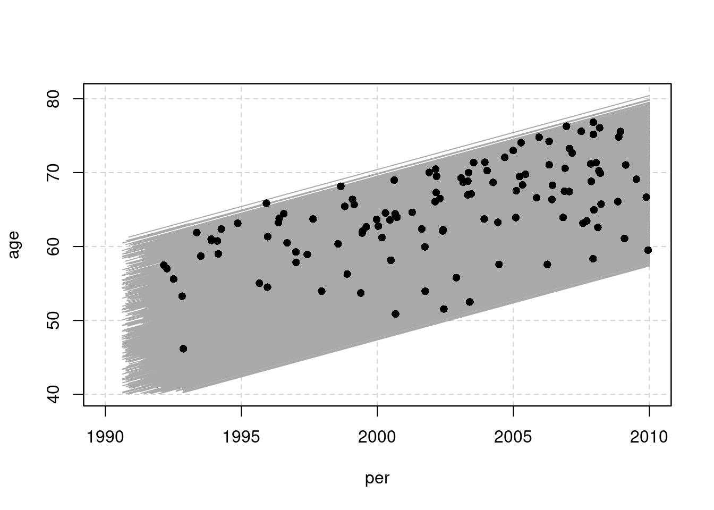
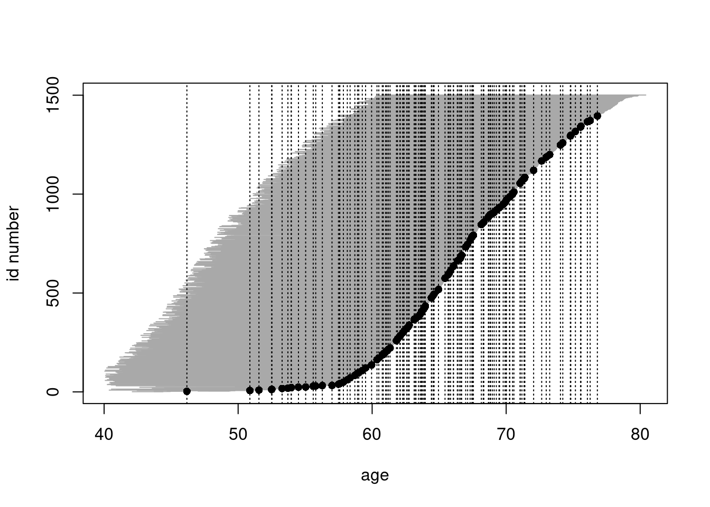
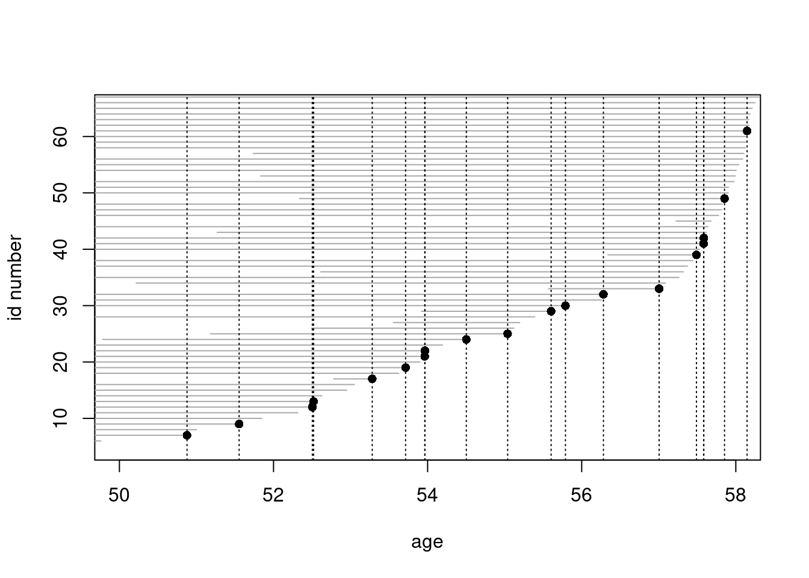
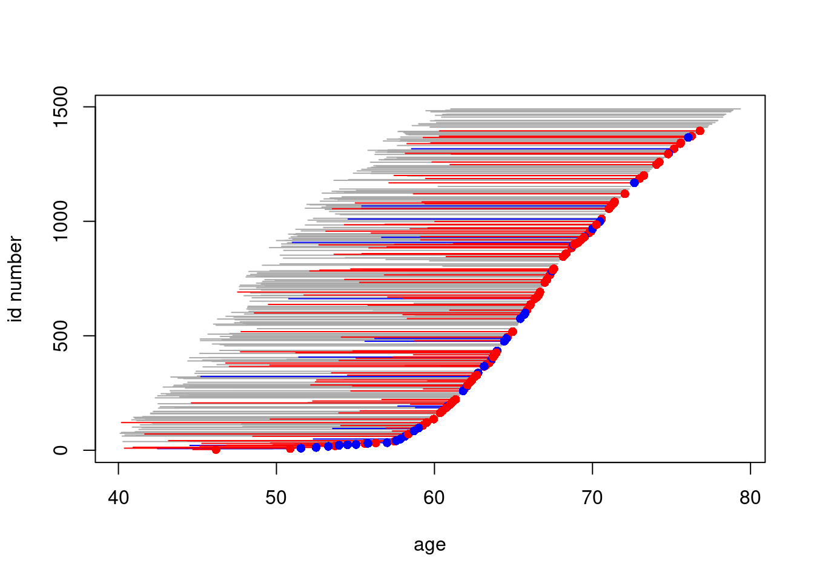

Chapter 13 Nested case-control study and case-cohort study: Risk factors of coronary heart disease
In this exercise we shall apply both the nested case-control (NCC)
design and the case-cohort (CC) design in sampling
control subjects from a defined cohort or closed study population.
The case group comprises those cohort members who die from coronary heart disease (CHD) during a \(> 20\) years follow-up of the cohort.
The risk factors of interest are cigarette smoking, systolic blood pressure, and total cholesterol level.
Our study population is an occupational cohort comprising 1501 men working in blue-collar jobs in one Nordic country. Eligible subjects had no history of coronary heart disease when recruited to the study in the early 1990s. Smoking habits and many other items were inquired at baseline by a questionnaire, and blood pressure was measured by a research nurse, the values being written down on the questionnaire. Serum samples were also taken from the cohort members at the same time and were stored in a freezer. For some reason, the data in the questionnaires were not entered to any computer file, but the questionnaires were kept in a safe storehouse for further purposes. Also, no biochemical analyses were initially performed for the sera collected from the participants. However, dates of birth and dates of entry to the study were recorded in an electronic file.
In 2010 the study was suddenly reactivated by those investigators of the original team who were still alive then.
As the first step mortality follow-up of the cohort members was
executed by record linkage to the national population register, from which
the dates of death and emigration were obtained. Another linkage was performed with the national register of causes of death in order to get the
deaths from coronary heard disease identified. As a result a data file
occoh.txt was completed containing the following variables:
| Variable | Description |
|---|---|
id |
identification number |
birth |
date of birth |
entry |
date of recruitment and baseline measurements |
exit |
date of exit from mortality follow-up |
death |
indicator for vital status at the end of follow-up; 1, if dead from any cause, and = 0, if alive |
chdeath |
indicator for death from coronary heart disease; 1, if yes, and 0, if no. |
This exercise is divided into five main parts:
Description of the study base or the follow-up experience of the whole cohort, identification of the cases and illustrating the risk sets.
Nested case-control study within the cohort:
- selection of controls by risk set or time-matched sampling
using function
ccwc()in packageEpi, - collection of exposure data for cases and controls
from the pertinent data base of the whole cohort to the
case-control data set using function
merge(), and - analysis of the case-control data set with stratified Cox
model using function
clogit()in packagesurvival(),
- selection of controls by risk set or time-matched sampling
using function
Case-cohort study within the cohort:
- selection of a subcohort by simple random sampling from the cohort,
- collection of exposure data for subcohort members and cases, and
- analysis of the case-cohort data set with Cox model by weighted partial
likelihood including appropriate weighting and correction of estimated
covariance matrix for the model coefficients using function
cch()in packagesurvival().
Comparison of results from all previous analyses, also with those from a full cohort design.
Further tasks and homework.
13.1 Reading the cohort data, illustrating the study base and risk sets
- Load the packages
Epiandsurvival. Read in the cohort data file and name the resulting data frame asoc. See its structure and print the univariate summaries.
library(Epi)
library(survival)
url <- "https://raw.githubusercontent.com/SPE-R/SPE/master/pracs/data"
oc <- read.table(paste(url, "occoh.txt", sep = "/"), header = TRUE)
str(oc)## 'data.frame': 1501 obs. of 6 variables:
## $ id : int 1 2 3 4 5 6 7 8 9 10 ...
## $ birth : chr "1943-02-19" "1934-07-06" "1939-03-05" "1939-07-03" ...
## $ entry : chr "1990-08-14" "1990-08-14" "1990-08-14" "1990-08-14" ...
## $ exit : chr "2009-12-31" "2009-12-31" "2009-12-31" "2009-12-31" ...
## $ death : int 0 0 0 0 1 1 1 1 0 0 ...
## $ chdeath: int 0 0 0 0 0 0 0 1 0 0 ...## id birth entry exit
## Min. : 1 Length:1501 Length:1501 Length:1501
## 1st Qu.: 376 Class :character Class :character Class :character
## Median : 751 Mode :character Mode :character Mode :character
## Mean : 751
## 3rd Qu.:1126
## Max. :1501
## death chdeath
## Min. :0.0000 Min. :0.00000
## 1st Qu.:0.0000 1st Qu.:0.00000
## Median :0.0000 Median :0.00000
## Mean :0.1972 Mean :0.07995
## 3rd Qu.:0.0000 3rd Qu.:0.00000
## Max. :1.0000 Max. :1.00000- It is convenient to change all the dates into fractional calendar years
We shall also compute the age at entry and at exit, respectively, as age will be the main time scale in our analyses.
- As the next step we shall create a
lexisobject from the data frame along the calendar period and age axes, and as the outcome event we specify the coronary death.
oc.lex <- Lexis(
entry = list(
per = yentry,
age = yentry - ybirth
),
exit = list(per = yexit),
exit.status = chdeath,
id = id, data = oc
)## NOTE: entry.status has been set to 0 for all.## Classes 'Lexis' and 'data.frame': 1501 obs. of 17 variables:
## $ per : 'cal.yr' num 1991 1991 1991 1991 1991 ...
## $ age : 'cal.yr' num 47.5 56.1 51.4 51.1 55.5 ...
## $ lex.dur: 'cal.yr' num 19.4 19.4 19.4 19.4 15.6 ...
## $ lex.Cst: num 0 0 0 0 0 0 0 0 0 0 ...
## $ lex.Xst: int 0 0 0 0 0 0 0 1 0 0 ...
## $ lex.id : int 1 2 3 4 5 6 7 8 9 10 ...
## $ id : int 1 2 3 4 5 6 7 8 9 10 ...
## $ birth : chr "1943-02-19" "1934-07-06" "1939-03-05" "1939-07-03" ...
## $ entry : chr "1990-08-14" "1990-08-14" "1990-08-14" "1990-08-14" ...
## $ exit : chr "2009-12-31" "2009-12-31" "2009-12-31" "2009-12-31" ...
## $ death : int 0 0 0 0 1 1 1 1 0 0 ...
## $ chdeath: int 0 0 0 0 0 0 0 1 0 0 ...
## $ ybirth : 'cal.yr' num 1943 1935 1939 1940 1935 ...
## $ yentry : 'cal.yr' num 1991 1991 1991 1991 1991 ...
## $ yexit : 'cal.yr' num 2010 2010 2010 2010 2006 ...
## $ agentry: 'cal.yr' num 47.5 56.1 51.4 51.1 55.5 ...
## $ agexit : 'cal.yr' num 66.9 75.5 70.8 70.5 71.1 ...
## - attr(*, "time.scales")= chr [1:2] "per" "age"
## - attr(*, "time.since")= chr [1:2] "" ""
## - attr(*, "breaks")=List of 2
## ..$ per: NULL
## ..$ age: NULL##
## Transitions:
## To
## From 0 1 Records: Events: Risk time: Persons:
## 0 1381 120 1501 120 25280.91 1501- At this stage it is informative to examine a graphical
presentation of the follow-up lines and outcome cases in a conventional
Lexis diagram. Make use of the
plotmethod forLexisobjects. Gray lifelines are drawn and a bullet is put at the exit point of those lifelines that end with the outcome event.
par(mfrow = c(1, 1))
plot(oc.lex, xlim = c(1990, 2010), grid = TRUE)
points(oc.lex, pch = c(NA, 16)[oc.lex$lex.Xst + 1])
- As age is here the main time axis,
we shall graphically illustrate the study base, i.e.
the follow-up lines and outcome events,
only along the age scale, being ordered by age at exit.
Vertical lines at those ages when new coronary
deaths occur are drawn to identify the pertinent
risk sets. For that purpose it is useful first
to sort the data frame and the Lexis object
jointly by age at exit & age at entry,
and to give a new ID number according to that order.
oc.ord <- cbind(ID = 1:1501, oc[order(oc$agexit, oc$agentry), ])
oc.lexord <- Lexis(
entry = list(age = agentry),
exit = list(age = agexit),
exit.status = chdeath,
id = ID, data = oc.ord
)## NOTE: entry.status has been set to 0 for all.plot(oc.lexord, "age")
points(oc.lexord, pch = ifelse(oc.lexord$lex.Xst == 1, 16, NA))
with(
subset(oc.lexord, lex.Xst == 1),
abline(v = agexit, lty = 3)
)
- For a closer look, we now
zoom the graphical illustration of the risk sets into
event times occurring between 50 to 58 years. –
Copy the last four lines from the previous item and add arguments xlim and ylim
to the call of plot().
plot(oc.lexord, "age", xlim = c(50, 58), ylim = c(5, 65))
points(
oc.lexord, "age", pch = ifelse(oc.lexord$lex.Xst == 1, 16, NA)
)
with(
subset(oc.lexord, lex.Xst == 1),
abline(v = agexit, lty = 3)
)
13.2 Nested case-control study
We shall now employ the strategy of risk-set sampling or time-matched sampling of controls, i.e. we are conducting a nested case-control study within the cohort.
- The risk sets are defined according to the age at diagnosis of the case. Further matching is applied for age at entry by 1-year agebands.
For this purpose we first generate a categorical variable
agen2for age at entry
Matched sampling from risk sets may be carried out using
function ccwc() found in the Epi package.
Its main arguments are the times
of entry and exit which specify the time at risk along the
main time scale (here age), and the outcome variable to be given
in the fail argument. The number of controls per case
is set to be two, and the additional matching factor is given.
- After setting the RNG seed (with your own number),
make a call of this function and see
the structure of the resulting data frame cactrl
containing the cases and the chosen individual controls.
set.seed(98623)
cactrl <-
ccwc(
entry = agentry, exit = agexit, fail = chdeath,
controls = 2, match = agen2,
include = list(id, agentry),
data = oc.lex, silent = FALSE
)##
## Sampling risk sets: ........................................................................................................................## 'data.frame': 360 obs. of 7 variables:
## $ Set : num 1 1 1 2 2 2 3 3 3 4 ...
## $ Map : num 8 1423 1 95 381 ...
## $ Time : num 63.9 63.9 63.9 66.7 66.7 ...
## $ Fail : num 1 0 0 1 0 0 1 0 0 1 ...
## $ agen2 : Factor w/ 22 levels "(40,41]","(41,42]",..: 8 8 8 8 8 8 8 8 8 8 ...
## $ id : int 8 1423 1 95 381 106 115 44 1343 504 ...
## $ agentry: num 47.7 47.9 47.5 47.5 48 ...Check the meaning of the four first columns of the case-control
data frame from the help page of function ccwc().
- Now we shall start collecting data on the
risk factors for the cases and their
matched controls, including determination of the total cholesterol levels from the frozen sera! The storehouse of the risk factor measurements for
the whole cohort is file
occoh-Xdata.txt. It contains values of the following variables.
| Variable | Description |
|---|---|
id |
identification number, the same as in occoh.txt |
smok. |
cigarette smoking with categories; 1: never, 2: former, 3: 1-14/d, 4: 15+/d |
sbp. |
systolic blood pressure (mmHg) |
tchol |
total cholesterol level (mmol/l) |
## 'data.frame': 1501 obs. of 6 variables:
## $ id : int 1 2 3 4 5 6 7 8 9 10 ...
## $ birth: chr "1943-02-19" "1934-07-06" "1939-03-05" "1939-07-03" ...
## $ entry: chr "1990-08-14" "1990-08-14" "1990-08-14" "1990-08-14" ...
## $ smok : int 4 3 3 1 2 2 1 2 1 1 ...
## $ sbp : int 130 128 157 102 138 119 155 154 164 124 ...
## $ tchol: num 7.56 6.55 8.13 5.93 7.92 5.9 7.28 7.43 5.34 6.24 ...- In the next step we collect the values of the risk factors
for our cases and controls by merging the case-control data frame and
the storehouse file.
In this operation we utilize function
merge()to select columns of two data frames:cactrl(all columns) andocX(four columns) and to merge these into a single file (see exercise 1.1, subsection 1.1.8, wheremerge()was introduced). Theidvariable in both files is used as the key to link each individual case or control with his own data on risk factors.
## 'data.frame': 360 obs. of 10 variables:
## $ id : int 1 8 10 12 14 28 37 41 41 42 ...
## $ Set : num 1 1 77 9 44 50 5 5 7 9 ...
## $ Map : num 1 8 10 12 14 28 37 41 41 42 ...
## $ Time : num 63.9 63.9 73 70.3 75.2 ...
## $ Fail : num 0 1 0 0 0 0 0 1 0 1 ...
## $ agen2 : Factor w/ 22 levels "(40,41]","(41,42]",..: 8 8 20 17 19 19 1 1 1 17 ...
## $ agentry: num 47.5 47.7 59.5 56.1 58.7 ...
## $ smok : int 4 2 1 2 4 1 3 4 4 2 ...
## $ tchol : num 7.56 7.43 6.24 5 3.73 4.56 5.15 6.09 6.09 5.41 ...
## $ sbp : int 130 154 124 148 165 230 116 125 125 156 ...- We shall treat smoking as categorical and total cholesterol and systolic blood pressure as quantitative risk factors, but the values of the latter will be divided by 10 to get more interpretable effect estimates.
| Variable | Description |
|---|---|
cholgrp |
cholesterol class; 1: <5, 2: 5-<6.5, 3: >=6.5 |
sbpgrp |
blood pressure class; 1: <130, 2: 130-<150, 3: 150-<170, 4: >=170 |
Convert the smoking variable into a factor.
- It is useful to start the analysis of case-control data by simple tabulations by the categorized risk factors. Crude estimates of the rate ratios associated with them, in which matching is ignored, can be obtained as follows. We shall focus on smoking
stat.table(
index = list(smok, Fail),
contents = list(count(), percent(smok)),
margins = TRUE,
data = oc.ncc
)## ---------------------------------
## ----------Fail-----------
## smok 0 1 Total
## ---------------------------------
## never 85 31 116
## 35.4 25.8 32.2
##
## ex 61 19 80
## 25.4 15.8 22.2
##
## 1-14/d 54 42 96
## 22.5 35.0 26.7
##
## >14/d 40 28 68
## 16.7 23.3 18.9
##
##
## Total 240 120 360
## 100.0 100.0 100.0
## ---------------------------------## exp(Est.) 2.5% 97.5%
## (Intercept) 0.365 0.242 0.550
## smokex 0.854 0.442 1.651
## smok1-14/d 2.133 1.199 3.794
## smok>14/d 1.919 1.018 3.619- A proper analysis takes into account matching that was employed
in the selection of controls for each case from the
pertinent risk set, further restricted to
subjects who were about the same age at entry as the case was.
Also, adjustment for the other risk factors is desirable.
In this analysis function
clogit()insurvivalpackage is utilized. It is in fact a wrapper of functioncoxph().
m.clogit <- clogit(Fail ~ smok + I(sbp / 10) + tchol +
strata(Set), data = oc.ncc)
summary(m.clogit)## Call:
## coxph(formula = Surv(rep(1, 360L), Fail) ~ smok + I(sbp/10) +
## tchol + strata(Set), data = oc.ncc, method = "exact")
##
## n= 360, number of events= 120
##
## coef exp(coef) se(coef) z Pr(>|z|)
## smokex -0.22100 0.80172 0.35085 -0.630 0.52877
## smok1-14/d 0.59186 1.80734 0.29894 1.980 0.04772 *
## smok>14/d 0.56616 1.76149 0.33326 1.699 0.08935 .
## I(sbp/10) 0.11171 1.11818 0.05453 2.049 0.04050 *
## tchol 0.40091 1.49319 0.11142 3.598 0.00032 ***
## ---
## Signif. codes: 0 '***' 0.001 '**' 0.01 '*' 0.05 '.' 0.1 ' ' 1
##
## exp(coef) exp(-coef) lower .95 upper .95
## smokex 0.8017 1.2473 0.4031 1.595
## smok1-14/d 1.8073 0.5533 1.0060 3.247
## smok>14/d 1.7615 0.5677 0.9167 3.385
## I(sbp/10) 1.1182 0.8943 1.0048 1.244
## tchol 1.4932 0.6697 1.2003 1.858
##
## Concordance= 0.679 (se = 0.046 )
## Likelihood ratio test= 28.81 on 5 df, p=3e-05
## Wald test = 24.31 on 5 df, p=2e-04
## Score (logrank) test = 27.31 on 5 df, p=5e-05## exp(Est.) 2.5% 97.5%
## smokex 0.802 0.403 1.595
## smok1-14/d 1.807 1.006 3.247
## smok>14/d 1.761 0.917 3.385
## I(sbp/10) 1.118 1.005 1.244
## tchol 1.493 1.200 1.858Compare these with the crude estimates obtained above.
13.3 Case-cohort study
Now we start applying the second major outcome-selective sampling strategy for collecting exposure data from a big study population
- The subcohort is selected as a
simple random sample (\(n=260\)) from the whole cohort. Theid-numbers of the individuals that are selected will be stored in vectorsubcids, andsubcindis an indicator for inclusion to the subcohort.
N <- 1501
n <- 260
set.seed(15792)
subcids <- sample(N, n)
oc.lexord$subcind <- 1 * (oc.lexord$id %in% subcids)- We form the data frame
oc.ccto be used in the subsequent analysis selecting the union of the subcohort members and the case group from the data frame of the full cohort. After that we collect the data of the risk factors from the data storehouse for the subjects in the case-cohort data
oc.cc <- subset(oc.lexord, subcind == 1 | chdeath == 1)
oc.cc <- merge(oc.cc, ocX[, c("id", "smok", "tchol", "sbp")],
by = "id"
)
str(oc.cc)## Classes 'Lexis' and 'data.frame': 362 obs. of 21 variables:
## $ id : int 8 10 34 40 41 42 43 45 51 62 ...
## $ age : num 47.7 59.5 51.9 45.2 40.2 ...
## $ lex.dur: num 16.21 19.38 19.36 4.59 19.32 ...
## $ lex.Cst: num 0 0 0 0 0 0 0 0 0 0 ...
## $ lex.Xst: int 1 0 0 0 1 1 1 0 1 1 ...
## $ lex.id : int 430 1483 1074 6 121 987 746 486 1056 663 ...
## $ ID : int 430 1483 1074 6 121 987 746 486 1056 663 ...
## $ birth : chr "1942-11-24" "1931-03-01" "1938-09-14" "1945-06-22" ...
## $ entry : chr "1990-08-15" "1990-08-15" "1990-08-20" "1990-08-21" ...
## $ exit : chr "2006-10-30" "2009-12-31" "2009-12-31" "1995-03-26" ...
## $ death : int 1 0 0 1 1 1 1 0 1 1 ...
## $ chdeath: int 1 0 0 0 1 1 1 0 1 1 ...
## $ ybirth : num 1943 1931 1939 1945 1950 ...
## $ yentry : num 1991 1991 1991 1991 1991 ...
## $ yexit : num 2007 2010 2010 1995 2010 ...
## $ agentry: num 47.7 59.5 51.9 45.2 40.2 ...
## $ agexit : num 63.9 78.8 71.3 49.8 59.5 ...
## $ subcind: num 0 1 1 1 0 0 0 1 1 0 ...
## $ smok : int 2 1 1 4 4 2 3 2 1 2 ...
## $ tchol : num 7.43 6.24 5.8 5.88 6.09 5.41 5.72 5.98 7.12 5.57 ...
## $ sbp : int 154 124 113 141 125 156 128 115 137 173 ...
## - attr(*, "breaks")=List of 1
## ..$ age: NULL
## - attr(*, "time.scales")= chr "age"
## - attr(*, "time.since")= chr ""- We shall now create a graphical illustration of the lifelines contained in the case-cohort data. Lines for the subcohort non-cases are grey without bullet at exit, those for subcohort cases are blue with blue bullet at exit, and for cases outside the subcohort the lines are red and dotted with red bullets at exit.
plot(subset(oc.cc, chdeath == 0), "age")
lines(subset(oc.cc, chdeath == 1 & subcind == 1), col = "blue")
lines(subset(oc.cc, chdeath == 1 & subcind == 0), col = "red")
points(subset(oc.cc, chdeath == 1),
pch = 16,
col = c("blue", "red")[oc.cc$subcind + 1]
)
- Define the categorical smoking variable again.
A crude estimate of the hazard ratio for the various smoking categories \(k\) vs. non-smokers (\(k=1\)) can be obtained by tabulating cases \((D_k)\) and person-years (\(y_k\)) in the subcohort by smoking and then computing the relevant exposure odds ratio for each category: \[ \text{HR}_k ^{\text{crude}} = \frac{D_k/D_1}{y_k/y_1} \]
sm.cc <- stat.table(
index = smok,
contents = list(Cases = sum(lex.Xst), Pyrs = sum(lex.dur)),
margins = TRUE,
data = oc.cc
)
print(sm.cc, digits = c(sum = 0, ratio = 1))## -------------------------
## smok Cases Pyrs
## -------------------------
## never 31 2071
## ex 19 1174
## 1-14/d 42 1399
## >14/d 28 846
##
## Total 120 5489
## -------------------------## never ex 1-14/d >14/d
## 1.000 1.081 2.006 2.21113.4 Do these estimates resemble those obtained from nested case-control data?
To estimate the rate ratios associated with smoking and adjusted for the
other risk factors we now fit the pertinent Cox model
applying the method of weighted partial likelihood as
presented by Ling & Ying (1993) and Barlow (1994).
This analysis can be done using function cch()
in package survival with method = "LinYing"
oc.cc$survobj <- with(oc.cc, Surv(agentry, agexit, chdeath))
cch.LY <- cch(survobj ~ smok + I(sbp / 10) + tchol,
stratum = NULL,
subcoh = ~subcind, id = ~id, cohort.size = N, data = oc.cc,
method = "LinYing"
)
summary(cch.LY)## Case-cohort analysis,x$method, LinYing
## with subcohort of 260 from cohort of 1501
##
## Call: cch(formula = survobj ~ smok + I(sbp/10) + tchol, data = oc.cc,
## subcoh = ~subcind, id = ~id, stratum = NULL, cohort.size = N,
## method = "LinYing")
##
## Coefficients:
## Coef HR (95% CI) p
## smokex -0.096 0.909 0.457 1.806 0.785
## smok1-14/d 0.769 2.157 1.180 3.943 0.012
## smok>14/d 1.085 2.959 1.532 5.718 0.001
## I(sbp/10) 0.218 1.244 1.119 1.383 0.000
## tchol 0.350 1.419 1.152 1.748 0.00113.5 Full cohort analysis and comparisons
Finally, suppose the investigators after all could afford to collect the data on risk factors from the storehouse for the whole cohort.
- Let us form the data frame corresponding to the full cohort design and convert again smoking to be categorical.
oc.full <- merge(oc.lex, ocX[, c("id", "smok", "tchol", "sbp")],
by.x = "id", by.y = "id"
)
oc.full$smok <- factor(oc.full$smok,
labels = c("never", "ex", "1-14/d", ">14/d")
)Juts for comparison with the corresponding analysis in case-cohort data perform a similar crude estimation of hazard ratios associated with smoking.
sm.coh <- stat.table(
index = smok,
contents = list(Cases = sum(lex.Xst), Pyrs = sum(lex.dur)),
margins = TRUE,
data = oc.full
)
print(sm.coh, digits = c(sum = 0, ratio = 1))## -------------------------
## smok Cases Pyrs
## -------------------------
## never 31 10363
## ex 19 4879
## 1-14/d 42 6246
## >14/d 28 3793
##
## Total 120 25281
## -------------------------## never ex 1-14/d >14/d
## 1.000 1.302 2.248 2.468- Fit now the ordinary Cox model to the full cohort. There is no need
to employ extra tricks upon the ordinary
coxph()fit.
cox.coh <- coxph(Surv(agentry, agexit, chdeath) ~
smok + I(sbp / 10) + tchol, data = oc.full)
summary(cox.coh)## Call:
## coxph(formula = Surv(agentry, agexit, chdeath) ~ smok + I(sbp/10) +
## tchol, data = oc.full)
##
## n= 1501, number of events= 120
##
## coef exp(coef) se(coef) z Pr(>|z|)
## smokex 0.10955 1.11577 0.29240 0.375 0.707922
## smok1-14/d 0.72567 2.06612 0.23704 3.061 0.002203 **
## smok>14/d 0.95054 2.58711 0.26198 3.628 0.000285 ***
## I(sbp/10) 0.14372 1.15456 0.04096 3.509 0.000450 ***
## tchol 0.26517 1.30366 0.07089 3.740 0.000184 ***
## ---
## Signif. codes: 0 '***' 0.001 '**' 0.01 '*' 0.05 '.' 0.1 ' ' 1
##
## exp(coef) exp(-coef) lower .95 upper .95
## smokex 1.116 0.8962 0.629 1.979
## smok1-14/d 2.066 0.4840 1.298 3.288
## smok>14/d 2.587 0.3865 1.548 4.323
## I(sbp/10) 1.155 0.8661 1.065 1.251
## tchol 1.304 0.7671 1.135 1.498
##
## Concordance= 0.681 (se = 0.026 )
## Likelihood ratio test= 41.16 on 5 df, p=9e-08
## Wald test = 42.05 on 5 df, p=6e-08
## Score (logrank) test = 43.29 on 5 df, p=3e-08- Lastly, a comparison of the point estimates and standard errors between the different designs, including variants of analysis for the case-cohort design, can be performed.
betas <- cbind(coef(cox.coh), coef(m.clogit), coef(cch.LY))
colnames(betas) <- c("coh", "ncc", "cch.LY")
round(betas, 3)## coh ncc cch.LY
## smokex 0.110 -0.221 -0.096
## smok1-14/d 0.726 0.592 0.769
## smok>14/d 0.951 0.566 1.085
## I(sbp/10) 0.144 0.112 0.218
## tchol 0.265 0.401 0.350SEs <- cbind(
sqrt(diag(cox.coh$var)),
sqrt(diag(m.clogit$var)),
sqrt(diag(cch.LY$var))
)
colnames(SEs) <- colnames(betas)
round(SEs, 3)## coh ncc cch.LY
## smokex 0.292 0.351 0.350
## smok1-14/d 0.237 0.299 0.308
## smok>14/d 0.262 0.333 0.336
## I(sbp/10) 0.041 0.055 0.054
## tchol 0.071 0.111 0.106You will notice that the point estimates of the coefficients
obtained from the full cohort, nested case-control, and case-cohort analyses,
respectively, are somewhat variable. However,
the standard errors from the NCC and CC
analyses should be quite similar when the numbers of cases and non-cases are similar.
13.6 Further exercises and homework
If you have time, you could run both the NCC study and CC study again but now with a larger control group or subcohort; for example 4 controls per case in NCC and \(n=520\) as the subcohort size in CC. Remember resetting the seed first. Pay attention in the results to how much closer will be the point estimates and the proper SEs to those obtained from the full cohort design.
Instead of simple linear terms for
sbpandtcholyou could try to fit spline models to describe their effects.A popular alternative to weighted partial likelihood in the analysis of case-cohort data is the pseudo-likelihood method (Prentice 1986), which is based on late entry to follow-up of the case subjects not belonging to the subcohort. The way to do this is provided by function
cch()which you can apply directly to the case-cohort dataoc.ccas before but now withmethod = "Prentice". – Try this and compare the results with those obtained by weighted partial likelihood in modelcch.LY.Yet another computational solution for maximizing weighted partial likelihood is provided by a combination of functions
twophase()andsvycoxph()of thesurveypackage. The approach is illustrated with an example in a vignette Two-phase designs in epidemiology by Thomas Lumley (see http://cran.r-project.org/web/packages/survey/vignettes/epi.pdf). – You can try this at home and check that you would obtain similar results as with modelcch.LY.